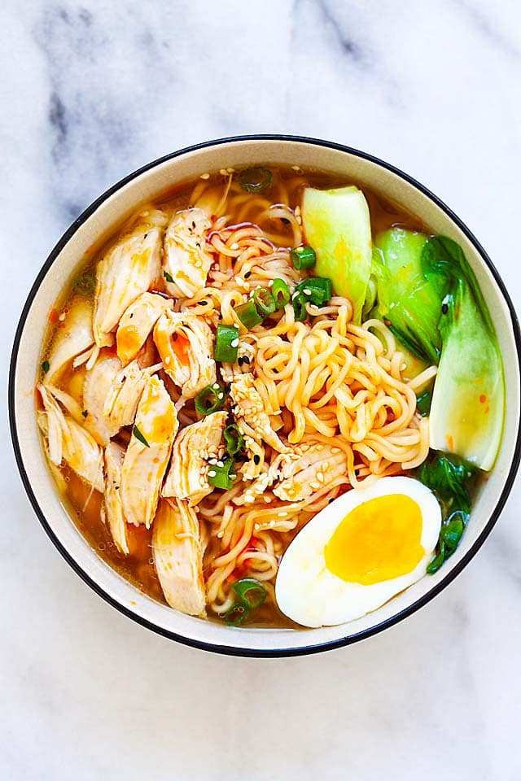

Ramen

Description
A Japanese noodle soup, with a combination of a rich flavoured broth,
one of a variety of types of noodle and a selection of meats or vegetables,
often topped with a boiled egg.
Ingredients
- Udon Noodles
- Chicken
- Egg
- Bok Choy
- Chicken Broth
- Scallions
- Sesame Seeds
Steps
- Season chicken and bake in oven at 400 degrees for 20 minutes
- Bring broth to a simmer in meantime, add choise of seasoning
- In a seperate pot, boil water and add egg for 6 minutes, then give the egg a ice bath
- Heat noodles in said simmering broth until soft
- Add in Bok Choy to simmering broth with noodles
- After chicken is cooked, cut up in bite size strips, then assemble in broth
- Add peeled and cut egg to ramen and garnish with scallions!